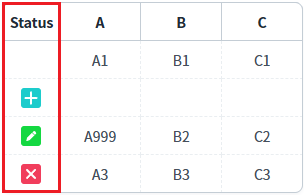
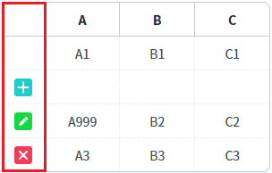
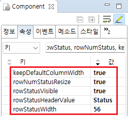

GridView의 행 상태 컬럼에 대한 추가 속성을 설정한 예제입니다.
아래 목록은 적용 속성별 설명입니다. - rowStatusVisible : 행의 상태(추가/수정/삭제) 컬럼을 표시 - rowNumStatusResize : 행 상태 컬럼의 리사이즈 가능 여부 설정 - rowStatusHeaderValue : 행 상태 컬럼의 헤더의 출력 값(레이블) 설정 - rowStatusWidth : 행 상태 컬럼 너비(폭) 설정 - keepDefaultColumnWidth : 행 상태 컬럼 너비가 GridView에 'autoFit' 속성에 영향을 받지 않도록 설정
이 기능은 'rowStatusVisible' 속성이 'true'로 설정되어야 동작합니다.
행 상태 표시 및 부가 기능 설정
행 상태 표시만 설정
예제 영역 '행 상태 표시 및 부가 설정'에 구성된 GridView에서 테스트합니다.행의 상태별 아이콘을 확인하기 위해 화면 로딩 후 스크립트(행 추가, 행 삭제, 값 변경)가 작성되었습니다.
1
실행 결과를 확인합니다.
- 첫 번째 컬럼에 행 상태가 표시됩니다. - 행 상태 컬럼 너비(폭)이 '56px'로 설정되었습니다. - 행 상태 컬럼의 헤더에 문자열 'Status'가 표시(출력)됩니다. - 행 상태 컬럼의 리사이즈가 가능합니다. (헤더 컬럼에서 조작) - 행 상태 컬럼의 너비가 'autoFit' 속성의 설정에 영향을 받지 않습니다.
Image 1.브라우저(Chrome) 실행 예시

예제 영역 '행 상태 표시만 설정'에 구성된 GridView에서 테스트합니다.행의 상태별 아이콘을 확인하기 위해 화면 로딩 후 스크립트(행 추가, 행 삭제, 값 변경)가 작성되었습니다.
1
실행 결과를 확인합니다.
- 첫 번째 컬럼에 행 상태가 표시됩니다. - 행 상태 컬럼 너비(폭)이 그리드의 너비에 따라 동적으로 변경됩니다. - 행 상태 컬럼의 헤더에 문자열이 표시되지 않습니다. - 행 상태 컬럼의 리사이즈가 불가합니다. (헤더 컬럼에서 조작) - 행 상태 컬럼의 너비가 'autoFit' 속성의 설정에 따라 변경됩니다.
Image 2.브라우저(Chrome) 실행 예시

1
GridView의 속성을 정의합니다.
[필수] rowStatusVisible="true"
[default:false, true] 행 상태 표시 여부
[선택] rowNumStatusResize="true"
[default:false, true] 행 번호 컬럼의 리사이즈 가능 여부 설정
[선택] rowStatusHeaderValue="Status"
행 상태 컬럼의 헤더의 문자열 설정
[선택] rowStatusWidth="56"
행 상태 컬럼 너비(폭) 설정
[선택] keepDefaultColumnWidth="true"
[default: false, true] autoFit이 설정되어 있는 경우, 행의 번호(rowNum)와 행의 상태(rowStatus) 컬럼의 너비를 고정
Image 3.웹스퀘어 스튜디오의 Component View - 속성 설정 예시

Example 1.Source
<!-- gridView 의 소스 본문 예시 --> <w2:gridView rowNumStatusResize="true" rowStatusHeaderValue="Status" rowStatusVisible="true" rowStatusWidth="56" keepDefaultColumnWidth="true"> <!-- 중략 --> </w2:gridView>
keepDefaultColumnWidth
rowStatusVisible
rowStatusHeaderValue
rowStatusWidth
rowNumStatusResize
setRowStatusColumnWidth( size )